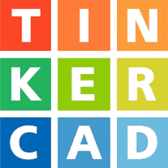

En la actualidad, la Robótica Educativa se ha convertido en una herramienta pedagógica innovadora que impulsa el aprendizaje significativo en el aula, permitiendo a los estudiantes desarrollar competencias esenciales para enfrentar los desafíos del siglo XXI. A través del diseño, construcción y programación de sistemas robóticos, los estudiantes no solo adquieren conocimientos técnicos, sino que también fortalecen habilidades como el pensamiento lógico, la creatividad, la colaboración y la resolución de problemas.
Investigaciones recientes (Papakostas et al., 2023) han demostrado que la Robótica Educativa tiene un impacto positivo en el desarrollo del pensamiento computacional y en el rendimiento académico, especialmente en áreas STEM (Ciencia, Tecnología, Ingeniería y Matemáticas). Plataformas accesibles como Arduino, Tinkercad y mBlock han facilitado la incorporación de la robótica en todos los niveles educativos, permitiendo a los estudiantes experimentar con la electrónica, la programación y la automatización de una manera práctica e interactiva.
PLATAFORMAS
Tinkercad

Tinkercad es una aplicación de modelado 3D en línea gratuita que permite a los usuarios crear diseños en 3D desde su navegador web sin necesidad de instalar software adicional en su ordenador. La herramienta es fácil de usar, con una interfaz gráfica intuitiva que permite a los usuarios arrastrar y soltar objetos para construir sus modelos.
Tinkercad es popular entre los entusiastas de la electrónica, la robótica y la impresión 3D, ya que permite diseñar y personalizar piezas y componentes de estos campos. Además, la plataforma incluye una amplia variedad de formas y objetos predefinidos que los usuarios pueden utilizar como punto de partida para sus diseños. Los diseños creados en Tinkercad se pueden exportar a otros programas de modelado 3D o a herramientas de impresión 3D para su producción. La herramienta es una excelente opción para principiantes que buscan experimentar con la creación de modelos en 3D, pero también es utilizada por diseñadores y profesionales que buscan una solución rápida y fácil para crear prototipos.
mBlock
mBlock es una plataforma de programación visual basada en bloques que se utiliza para enseñar robótica y programación a estudiantes de todas las edades. La plataforma está basada en Scratch, un lenguaje de programación visual desarrollado por el MIT (Instituto de Tecnología de Massachusetts).
mBlock está diseñado para ser utilizado con robots de la plataforma mBot, aunque también puede ser utilizado con otros robots y kits de robótica compatibles. La plataforma cuenta con una interfaz gráfica de usuario fácil de usar, con bloques de programación visual que representan diferentes comandos y funciones. Los usuarios pueden arrastrar y soltar estos bloques para construir programas para sus robots, lo que hace que la programación sea accesible para principiantes sin necesidad de aprender un lenguaje de programación de texto.
Además, mBlock incluye una amplia variedad de recursos en línea, como tutoriales, lecciones y proyectos, lo que hace que sea una excelente opción para los profesores que buscan enseñar robótica y programación de una manera interactiva y accesible. La plataforma también permite a los estudiantes compartir sus proyectos y programas con la comunidad en línea, lo que fomenta la colaboración y el aprendizaje entre pares.
Plataforma Arduino IDE
Arduino IDE (Integrated Development Environment) es una plataforma de desarrollo de software utilizada para programar placas Arduino. Es una herramienta de programación gratuita y de código abierto que permite a los usuarios escribir, cargar y ejecutar código en una variedad de placas Arduino, que se utilizan comúnmente en proyectos de electrónica y robótica. La plataforma Arduino IDE incluye un editor de texto, un compilador, una biblioteca de funciones y herramientas de depuración para facilitar el desarrollo de proyectos en Arduino. Además, la plataforma es compatible con sistemas operativos como Windows, Mac OS X y Linux, lo que la hace accesible para una amplia comunidad de programadores y entusiastas de la electrónica.
Liu, F.-J., & Tseng, C.-W. (2024). Design and Practice of STEAM Interactive LED‑Cube Teaching Aids. Educational Innovations and Emerging Technologies, 4(1), 20–27. https://doi.org/10.35745/eiet2024v04.01.0003
Papakostas, M., Giannakos, M., & Sharma, K. (2023). Educational robotics for developing computational thinking: A systematic literature review. Computers & Education, 193, 104672. https://doi.org/10.1016/j.compedu.2023.104672